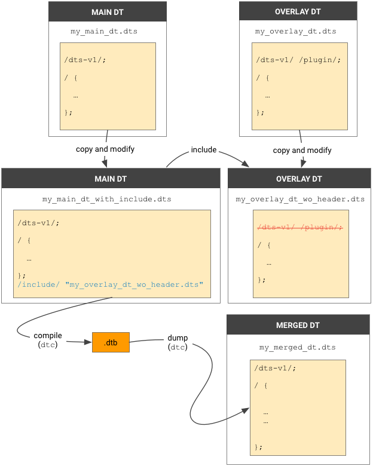

You can use Device Tree Compiler (DTC) to compile the Device Tree Source files. However, before applying the overlay DT on the target main DT, you should also verify the result by simulating the behavior of DTO.
When using dtc to compile .dts, you must add option
-@ to add a __symbols__ node in the resulting
.dtbo. The __symbols__ node contains a list of all
nodes that are marked with a label, which the DTO library can use for
references.
Sample command to build main DT .dts:
dtc -@ -O dtb -o my_main_dt.dtb my_main_dt.dts
Sample command to build the overlay DT .dts:
dtc -@ -O dtb -o my_overlay_dt.dtbo my_overlay_dt.dts
Note: If you encounter the DTC build error:
invalid option --'@', you might need to update your DTC version.
Upstream of AOSP, the official DTC supports DTO as of
version
1.4.4 and most patches are merged after December 2016. For DTO support, we
recommend using the
external/dtc
in AOSP, which is synced with the latest DTC (with DTO patches merged as
needed).
Verification can help you identify errors that might occur when placing the
overlay DT on the main DT. Before updating the target, you can verify the
result of overlaying DT on the host by simulating the behavior of DTO using
/include/ in .dts.
Note: /include/ does NOT support
the use of __overlay__ in overlay DT sources.

Figure 1. Use syntax /include/ to simulate DTO
on the host.
.dts. In the copy, remove the
first line header. Example:
/dts-v1/; /plugin/;Save the file as
my_overlay_dt_wo_header.dts (or any filename you
want)..dts. In the copy, after the last
line, append the include syntax for the file you created in step 1. For example:
/include/ "my_overlay_dt_wo_header.dts"Save the file as
my_main_dt_with_include.dts (or any filename you
want).dtc to compile my_main_dt_with_include.dts to
get the merged DT, which should be the same result as DTO. For example:
dtc -@ -O dtb -o my_merged_dt.dtb my_main_dt_with_include.dts
dtc to dump my_merged_dt.dto.
dtc -O dts -o my_merged_dt.dts my_merged_dt.dtb